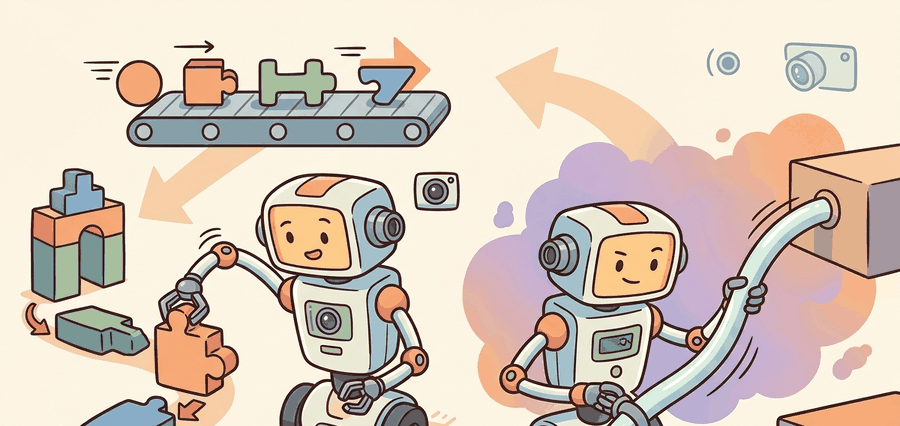

"Action representation is where a language model becomes a robot controller or fails to become one."
A Grounded AI Agent

This section builds on action chunking introduced in section 22.2 and the diffusion and flow heads covered in sections 22.4 and 22.5; those representations are the continuous-head alternatives compared against FAST tokens throughout. The frequency-space compression idea introduced here recurs in Part 9 alongside contact-rich manipulation planning in section 42.3, where the limits of smooth-trajectory assumptions become concrete.
A large robot-data mixture can improve average performance while weakening a specific robot or task family. Report per-embodiment and per-task slices, not only aggregate success.
Cross-embodiment learning works only when the dataset records what changed: robot body, camera view, action convention, control rate, task language, and success definition.
A robot arm reaching for a cup at 50 Hz produces 600 numbers per second: position, velocity, and gripper state across all joints. Feed those raw numbers token-by-token into a language model and the sequence explodes, inference lags behind the real world, and quantization error turns smooth motion into jerky steps. This is the wall every VLA hits the moment it tries to act faster than a sentence. FAST breaks through it by compressing action sequences in frequency space before tokenization, slashing token count without losing the fine timing that makes a grasp succeed. You will build that intuition here, compare it directly against continuous heads, and leave with a clear decision rule for choosing your action representation on a new robot.
The Action Representation Problem
A VLA can only learn actions through the representation it is given. If the representation loses timing, smoothness, gripper convention, or coordinate meaning, no amount of language understanding repairs it. This is why action tokenization, action chunking, diffusion heads, and flow heads belong in the same design conversation.
Naive tokenization bins each action dimension at each timestep. It is easy to implement, but it can produce long token sequences and visible quantization error. Action chunking predicts several future actions at once, which improves temporal consistency. Diffusion and flow heads generate continuous chunks directly. FAST keeps the token route but compresses action sequences in frequency space before tokenization.
Code Fragment 1 below shows a tiny version of per-dimension action tokenization. The example is intentionally small so the quantization error is visible.
# Discretize continuous end-effector deltas into fixed bins.
# This teaches the source of tokenization error before FAST compresses full action sequences.
import numpy as np
values = np.array([-0.041, -0.012, 0.006, 0.019, 0.044])
bins = np.linspace(-0.05, 0.05, 9)
token_ids = np.digitize(values, bins) - 1
centers = (bins[:-1] + bins[1:]) / 2
reconstructed = centers[np.clip(token_ids, 0, len(centers) - 1)]
print(token_ids.tolist())
print(np.round(reconstructed - values, 4).tolist())[0, 3, 4, 5, 7] [-0.0028, 0.0058, 0.0002, -0.0002, -0.0002]
token_ids vector shows how continuous action deltas become discrete symbols. The reconstruction error line explains why naive binning can damage fine motor behavior at high control rates.FAST In Plain Language
FAST stands for Frequency-space Action Sequence Tokenization. Instead of tokenizing every raw action dimension at every timestep, it transforms an action sequence into frequency coefficients, then tokenizes the compressed representation. This is the token count cliff: a 50-step, 7-DOF action chunk produces 350 raw tokens per chunk with naive binning, but only 16 to 32 FAST tokens after DCT compression on smooth reaching motions. The intuition is familiar from signal processing: many smooth robot motions can be described with fewer low-frequency components than raw samples.
Robot actions often change smoothly over short horizons. Frequency-space compression captures that smooth structure before the sequence reaches the language-model-style tokenizer. The model predicts fewer symbols, and those symbols decode back into a continuous action chunk.
The manual binning above is 13 lines and omits control-rate metadata, compression, inverse transforms, and dataset normalization. A FAST+ tokenizer in an open VLA stack handles those details as a reusable component, letting the policy train on compressed action tokens while preserving a continuous decoded trajectory.
# Pseudocode for a FAST-style tokenizer interface.
# Use the current openpi or FAST implementation rather than reimplementing DCT+BPE.
tokenizer = load_action_tokenizer("fast_plus")
tokens = tokenizer.encode(action_chunk, robot_metadata=metadata)
restored_chunk = tokenizer.decode(tokens, robot_metadata=metadata)
if isinstance(restored_chunk, list):
print({"rows": len(restored_chunk), "first": restored_chunk[0] if restored_chunk else None})
elif isinstance(restored_chunk, dict):
print({"fields": sorted(restored_chunk), "audit_ready": all(value not in (None, "") for value in restored_chunk.values())})
else:
print({"value": restored_chunk})tokenizer.encode and tokenizer.decode calls show the production interface that replaces manual binning. A maintained tokenizer handles compression, symbol mapping, and robot-specific metadata conventions.Algorithm: FAST Action Tokenization and Decoding
Input: raw action chunk $\mathbf{a} = (a_1, \ldots, a_T) \in \mathbb{R}^{T \times D}$, robot metadata $m$ (control rate, normalization statistics $\mu, \sigma$), FAST vocabulary $\mathcal{V}$ fit by BPE on DCT coefficients
Output: decoded action chunk $\hat{\mathbf{a}} \in \mathbb{R}^{T \times D}$ reconstructed from tokens $\tau = (\tau_1, \ldots, \tau_K)$ with $K \ll T \cdot D$
- Normalize. Apply per-dimension z-score: $\tilde{a}_{t,d} = (a_{t,d} - \mu_d) / \sigma_d$. Verify $\mu, \sigma$ match your robot's dataset before this step.
- Compute DCT. For each action dimension $d$, compute the Type-II Discrete Cosine Transform: $c_{k,d} = \sum_{t=0}^{T-1} \tilde{a}_{t,d} \cos\!\left(\tfrac{\pi}{T}(t+\tfrac{1}{2})k\right)$, yielding coefficient matrix $\mathbf{C} \in \mathbb{R}^{T \times D}$.
- Truncate. Keep only the lowest $K_{\text{freq}}$ frequency components per dimension: $\mathbf{C}' = \mathbf{C}[0{:}K_{\text{freq}}, :]$. For smooth trajectories $K_{\text{freq}} \ll T$ captures most energy; for contact-rich motion $K_{\text{freq}}$ must increase.
- Flatten and quantize. Flatten $\mathbf{C}'$ into a 1-D coefficient vector $\mathbf{c} \in \mathbb{R}^{K_{\text{freq}} \cdot D}$ and map each coefficient to a discrete symbol via the BPE vocabulary $\mathcal{V}$, producing token sequence $\tau = (\tau_1, \ldots, \tau_K)$.
- Autoregressive prediction. The VLA policy $\pi_\theta$ predicts $\tau$ token by token: $p_\theta(\tau \mid o) = \prod_{k=1}^{K} p_\theta(\tau_k \mid \tau_{1:k-1}, o)$, where $o$ is the visual-language observation.
- Detokenize. Map predicted tokens $\hat{\tau}$ back through $\mathcal{V}^{-1}$ to recover quantized coefficients $\hat{\mathbf{c}}$, then reshape to $\hat{\mathbf{C}}' \in \mathbb{R}^{K_{\text{freq}} \times D}$.
- Inverse DCT. Pad $\hat{\mathbf{C}}'$ to $T$ rows with zeros and apply the inverse DCT per dimension: $\hat{\tilde{a}}_{t,d} = \tfrac{1}{T} \sum_{k=0}^{T-1} w_k \, \hat{c}_{k,d} \cos\!\left(\tfrac{\pi}{T}(t+\tfrac{1}{2})k\right)$, where $w_0 = 1,\; w_{k>0} = 2$.
- Denormalize. Recover physical units: $\hat{a}_{t,d} = \hat{\tilde{a}}_{t,d} \cdot \sigma_d + \mu_d$.
- Validate and flag drift. Compute per-step reconstruction error $\|\hat{a}_t - a_t\|$ on held-out demonstrations. If the error at the task control frequency exceeds the per-joint tolerance, increase $K_{\text{freq}}$ or refit $\mathcal{V}$ on your robot's data. A KL divergence above 0.05 nats between stored and observed $(\mu, \sigma)$ is a strong signal to refit before deployment.
The choice between FAST tokens and continuous heads (diffusion or flow) turns on three concrete factors. First, inference latency: an autoregressive token model decodes a 50-step action chunk in a single forward pass once tokens are predicted, whereas a diffusion head runs 10 to 100 denoising steps per chunk, adding 50 to 200 ms on a typical GPU. Second, multimodality: if two qualitatively different grasp strategies are equally valid for the same observation, a diffusion or flow head can represent both modes; a single token sequence collapses to one mode. Third, training data smoothness: FAST compression is most efficient when actions are smooth over the prediction horizon, because the DCT concentrates energy in low-frequency coefficients. Jerky or contact-rich motions (peg insertion, door unlatching) spread energy across many coefficients and recover fewer tokens than smooth reaching motions, partially eroding FAST's sequence-length advantage. A practical rule: if your task is smooth and your inference budget is tight, FAST tokens; if your task is multi-modal or contact-rich and you can afford the sampling cost, a diffusion or flow head.
When loading a pretrained FAST tokenizer from the openpi repository, check that the tokenizer's action_mean and action_std statistics match your robot's action distribution before training. The FAST vocabulary is fit via BPE on DCT coefficients computed from a specific dataset; applying a mismatched tokenizer silently shifts every decoded action by the normalization offset, producing reconstruction errors that look small in offline RMSE but cause consistent positional drift on hardware. Run tokenizer.verify_stats(your_demo_dataset) (or the equivalent dataset-statistics check in your stack) and refit the vocabulary if the KL divergence between stored and observed statistics exceeds roughly 0.05 nats.
Figure 34.5 should be read as an action-interface comparison: discrete tokens, continuous heads, chunked actions, rate limits, and inverse transforms must be audited together.
Build And Evaluation Checklist
Curriculum, depth, and self-containment. FAST shows that tokenized actions can remain competitive when the tokenizer compresses smooth trajectories before symbols are predicted. For Action tokenization vs. continuous heads; the FAST tokenizer, the practical reading is to pin down the interface, assumptions, concrete example, and failure mode before comparing methods.
Production and evaluation contract. Tokenization quality is a control problem, not a vocabulary trick. For Action tokenization vs. continuous heads; the FAST tokenizer, treat the diagram, code, table, exercise, warning, and references as one evidence packet: boundary, artifact, tool choice, transfer check, failure mode, and source grounding.
Before accepting a Action tokenization vs. continuous heads; the FAST tokenizer result, name the loop variable that changed, the tool that makes it reproducible, the failure that would fool the metric, and the source that backs the claim.
Write an evidence row for one action representation: token or vector format, quantization scale, controller frequency, saturation rule, success metric, and the failure caused by representation mismatch.
Decision Guide
| Representation | Use When | Main Risk |
|---|---|---|
| Single-step actions | Fast reactive control with strong low-level controller | Jitter and myopic behavior |
| Action chunks | Manipulation needs short-horizon consistency | Chunk reuse can hide mid-course errors |
| Naive tokens | Simple experiments or low-frequency actions | Quantization error and long sequences |
| FAST tokens | Autoregressive VLA with smooth high-rate actions | Tokenizer mismatch across robots |
| Diffusion or flow | Continuous multi-modal trajectories | Sampling cost and latency |
Quantization failure is silent until it reaches the hardware. Consider a wrist-rotation joint that moves 0.018 radians per timestep at 50 Hz. With 8 bins over a range of plus or minus 0.05 radians, the bin width is 0.0125 radians: every small corrective motion is either rounded up or zeroed out, and the controller sees a staircase instead of a smooth curve. On a manipulation task requiring sub-centimeter gripper placement, that staircase produces visible oscillation and failed grasps even though the average reconstruction error looks small in offline evaluation. The same bin count is harmless for a base-navigation velocity command at 5 Hz, where 0.012-radian/step error is below the wheel slip floor. Always evaluate quantization error at the actual control frequency and joint, not averaged across the full action space.
Choose the action representation by plotting three things from your demonstrations: action smoothness, control frequency, and number of plausible trajectories for the same observation. Smooth high-rate data points toward FAST, diffusion, or flow. Sparse low-frequency commands can tolerate simpler tokens.
Expected output: Action tokenization vs. continuous heads; the FAST tokenizer should leave a reproducible VLA evidence trace with checkpoint, action representation, robot interface, metric, and failure label.
The best check on an action tokenizer is to decode it back into motion and ask whether the robot still moves the way the demonstration intended.
What information is lost when you bin each action dimension independently? Name one motor task where that loss would matter.
The field has not converged on one action representation. The most likely durable pattern is an interface layer that lets policies swap tokenized, diffusion, and flow heads while keeping the same observation and dataset schema.
Action representation is the hidden curriculum of VLA training. It determines what motor behaviors the model can express before learning even begins.
Take a short sequence of end-effector deltas from any robot task. Compute the quantization error from 8, 16, and 256 bins, then explain which errors would be visible on hardware.
What's Next?
Section 34.6 studies co-training, the method that tries to combine web semantics with embodied data.
FAST uses frequency-space compression to tokenize continuous action sequences for autoregressive VLAs. It is the key source for the chapter distinction between naive per-dimension binning and compressed action-sequence tokenization.
pi-zero uses a flow-matching action head on top of a pretrained vision-language backbone. The paper is central for understanding why continuous action generation became a serious alternative to discretized action tokens.
Pi-zero point five extends pi-zero through heterogeneous co-training for broader open-world generalization. It is useful for readers studying the frontier between task-specific robot policies and household-scale generalist behavior.
RT-2 made the action-as-language move explicit by fine-tuning VLM backbones to emit robot actions as tokens. Researchers should read it for the co-training setup, while practitioners should read it for the limits of transferring web semantics into motor control.
Chi et al. (2023). "Diffusion Policy: Visuomotor Policy Learning via Action Diffusion." arXiv.
Diffusion Policy established denoising over action sequences as a strong imitation-learning recipe. It gives the mathematical and practical background for diffusion heads in later VLA systems.
Hugging Face. "LeRobot." GitHub.
LeRobot is the practical open-source toolkit used here for datasets, policy training, evaluation, and low-cost robot workflows. Engineers should start here before writing custom data loaders or training loops.